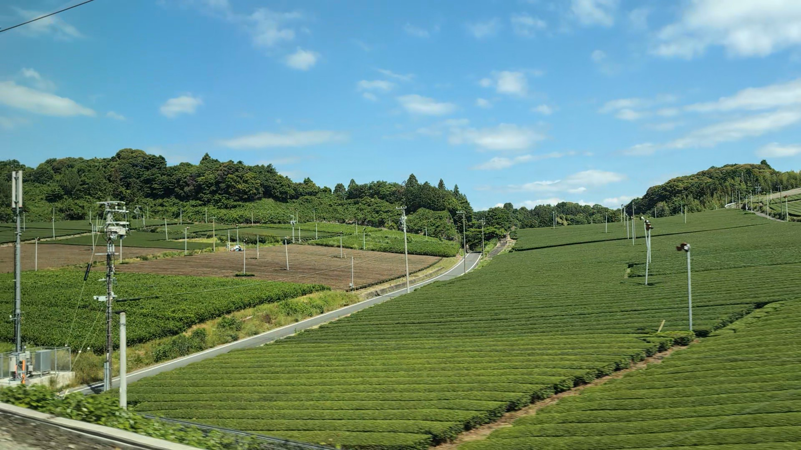
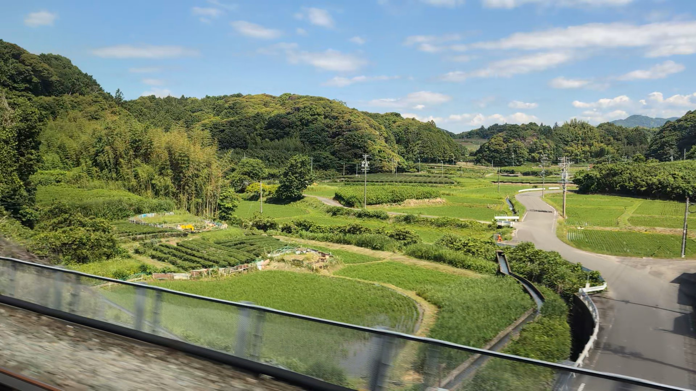

TOKAIDO SHINKANSEN WINDOW VIEW
静岡の茶畑は新幹線から見える？
緑の畝が、車窓を走る。

- 見える区間
- 静岡 → 掛川
- 座席側
- E席・山側
- タイミング
- 東京発のぞみ基準で約61分後
- 写真
- 2 枚
静岡の茶畑の見つけ方
掛川城の少し手前、車窓に茶畑の緑が流れる区間があります。富士山や城ほど大きな目印ではありません。でも、東海道新幹線で静岡を走っていることが一瞬でわかる、日本らしい車窓です。掛川が近づいたら、窓の外の畑の模様に注目してみてください。
東京から新大阪方面へ向かう場合は、静岡 → 掛川が近づいたらE席・山側の窓を少し早めに見てください。新大阪から東京方面へ向かう場合は、通過順が逆になります。
東海道新幹線の車窓としてのポイント
静岡の茶畑は、富士山だけではない東海道新幹線の車窓を楽しむための見どころです。列車の速度が速いため、見える時間は短く、天気や座席位置によって見え方が変わります。
写真で見る静岡の茶畑
